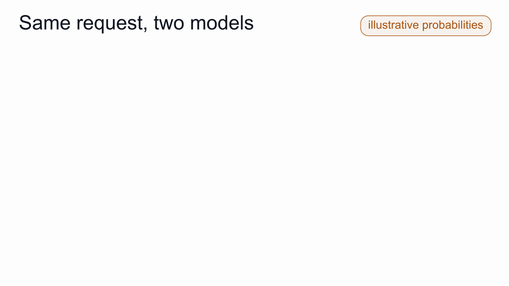
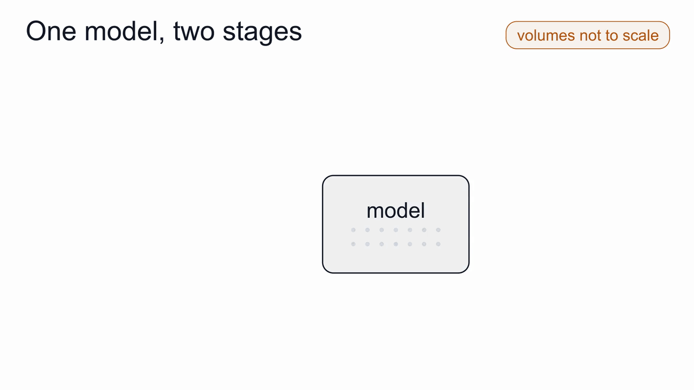
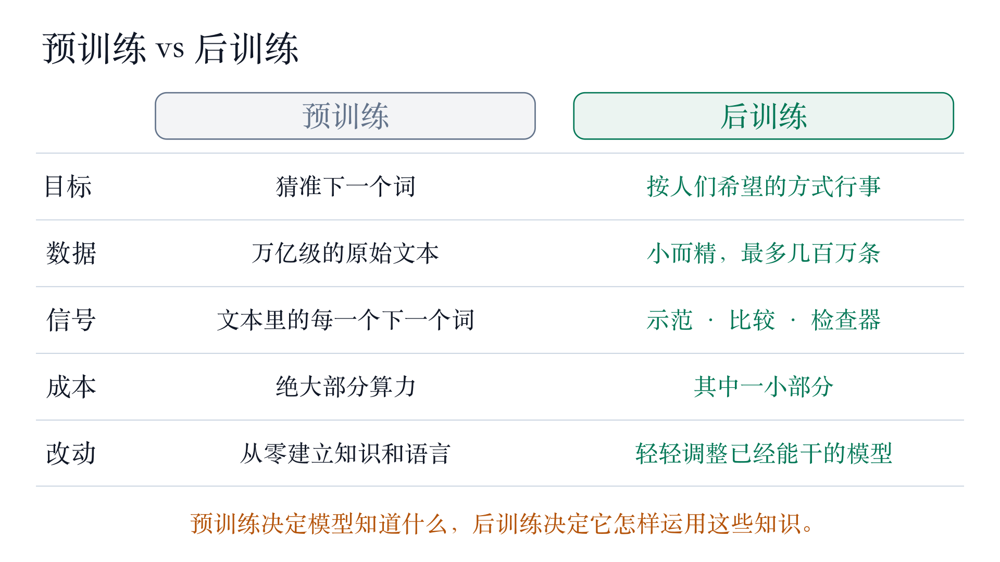
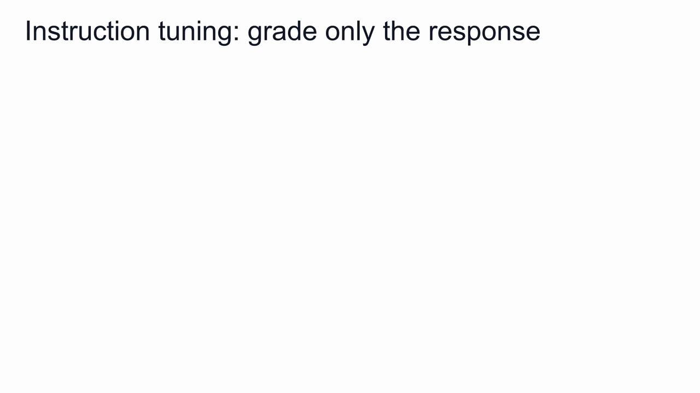
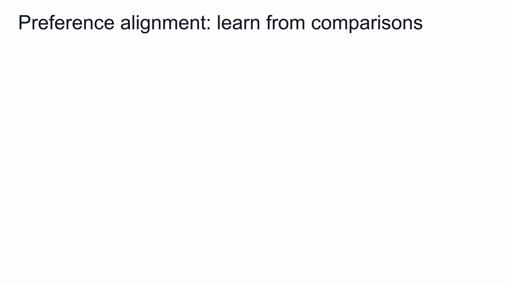
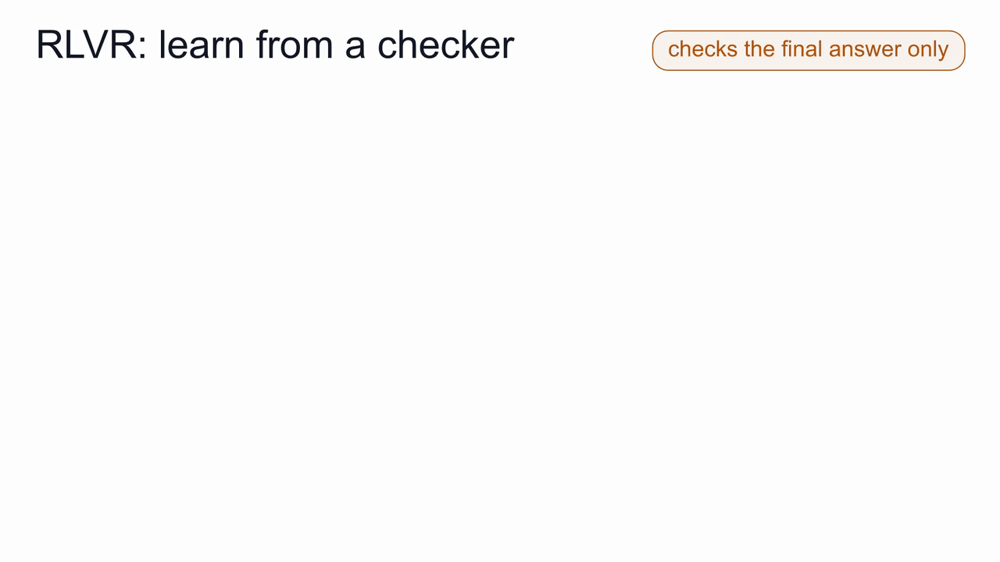

读过海量文字，怎么连个请求都接不住？
2022 年初，OpenAI 介绍 InstructGPT 时，展示过一组对比。他们给 GPT-3 一个很简单的请求：
“用几句话，给 6 岁的孩子讲讲登月。”
GPT-3 没有讲登月。它一口气又出了好几道题：
“给 6 岁的孩子讲讲万有引力。给 6 岁的孩子讲讲相对论。给 6 岁的孩子讲讲宇宙大爆炸……”
同一个请求交给 InstructGPT，回答就正常了：人们登上了月球，拍下看到的景象，再把照片传回地球，让大家都能看到。
GPT-3 并没有坏。它做的，恰好就是训练教给它的事。
pretraining（预训练）只教模型一件事：看到一段文字，猜下一个词。
训练材料是海量文本，大部分来自网页。网页上，一道题后面常常跟着另一道题：习题集、作业清单、“十个问题带你了解……”都是这样。所以“再出几道题”，对“下一句会是什么”来说，是个相当合理的猜测。
只经过预训练的模型，叫作 base model（基座模型）。预训练之后，为了把这个“文字续写器”变成有用的助手所做的一切训练，统称 post-training（后训练）。InstructGPT 就是在 GPT-3 的基础上做了后训练。
这篇文章讲三件事：为什么需要后训练，它和预训练有什么区别，以及它通常包含的三种技术。

只有预训练，还差什么？
想象一个人，读完了一座大图书馆里的所有书，却从没上过班。他懂得很多，你说半句话，他几乎都能接下去。可你走过去请他帮忙，他可能只顺着你的话题，自顾自地往下讲。
基座模型也有类似的三个短板：
- 不太会听指令。 让它讲登月，它可能接着出题；让它翻译一句话，它可能用原来的语言继续往下写。
- 可能造成伤害。 “猜下一个词”这条目标里，没有任何一条要求它避开危险建议、辱骂，或者说得很肯定的错话，比如给医疗问题一个错误答案。
- 不擅长长链条推理。 知道数学题的文字长什么样，离一步步把题做对，还有很远。
三个短板，根源相同：
预训练的目标，是把网页文本里的词猜准；人们真正需要的，是一个有帮助、不伤人的模型。两者对不上。
后训练要弥补的，就是这段差距。
预训练和后训练，差在哪里？
后训练并没有新建一个模型，它接着训练同一个模型。变化的是数据，以及告诉模型“怎样算更好”的那个信号。

目标。 预训练：猜准文本里的下一个词。后训练：按人们希望的方式行事，听懂指令、保证安全、把题答对。
数据。 预训练用原始文本，数量以万亿计。后训练用规模小、精心准备的数据：请求配上好的回答、两个回答之间的比较、有标准答案可以检查的题目。一个大型指令数据集，最多也就几百万条样本。
信号。 预训练里，文本中的每一个下一个词都是学习目标。后训练里，信号来自一份示范回答、一次“哪个更好”的判断，或者检查器给出的对错。
成本。 绝大部分算力花在预训练上；后训练只占其中一小部分。
改动幅度。 预训练从零建立知识和语言能力；后训练主要是在一个已经很能干的模型上，轻轻调整方向。
粗略地说：预训练决定模型知道什么，后训练决定它怎样运用这些知识。

数据少，改变却可以很大。有一项研究在大型指令数据里只混入 500 条安全示例，模型给出有害回答的情况就明显减少了。
三种技术，三种老师
后训练通常分成三种技术：instruction tuning（指令微调）、preference alignment（偏好对齐），以及 RLVR（Reinforcement Learning with Verifiable Rewards，可验证奖励强化学习）。最容易的区分办法，是看它们分别跟什么样的老师学：
一个示范，一个比较，一个检查。
1. 指令微调：跟着示范学
新员工上岗，常常先看范例：这是一个请求，这是一份好的回答。
指令微调也是这样。数据是一条条指令，各自配上一份好的回答，比如“把这句西班牙语翻译成英文”，后面跟着英文译文。
训练规则几乎没变，模型仍然在猜下一个词。变化在于哪些词算分：
指令只当作上下文，模型只在回答的词上接受评分。
它也叫 supervised fine-tuning（SFT，监督微调），因为每条指令都配有一份可以模仿的正确回答。在许多种任务上训练之后，模型听指令的能力会整体变强，连没见过的任务也能做得更好。

2. 偏好对齐：通过比较来学
指令微调之后，回答仍可能出错、不安全，或者没那么有用。
写出一份完美的回答很难；判断两份回答哪个更好，就容易得多。美食评论家未必会做菜，却能说出哪道菜更好吃。
偏好对齐用的正是这种判断。数据是一个问题、两份回答，再加一条标注：人们更喜欢哪一份。
常见的路线有两条。一条先单独训练一个 reward model（奖励模型），当裁判给任意回答打分，再让模型反复练习，争取更高的分。这条路线常被称为 RLHF（Reinforcement Learning from Human Feedback，基于人类反馈的强化学习），PPO（Proximal Policy Optimization） 是其中有名的算法。另一条是 DPO（Direct Preference Optimization，直接偏好优化），直接从成对的比较中学习，不需要单独的裁判。
两条路线都给模型系了一根“牵引绳”，连着训练前的原模型，技术上叫 KL penalty（KL 惩罚）。
没有这根牵引绳，模型可能一味追分，离出发点越来越远，把预训练学到的东西忘掉不少。

3. RLVR：让检查器来判对错
有些任务的答案，程序就能检查。数学题有最终数值，编程题有能跑通或跑不通的测试。
RLVR 就把这样的 verifier（检查器） 当作老师。模型对同一道题尝试几种解法，检查器逐个判对错，模型随后提高做对的那些解法的概率。
这里用不着人工裁判。回答写得再漂亮、再长，也骗不过检查器。
所以 RLVR 很适合那些基座模型不擅长的长链条问题。需要提醒的是：检查器的可靠程度取决于它的规则。如果它只看最终答案，就无法说明中间每一步都对。

小结
- 预训练教会模型续写文字；会续写，离会帮忙还有距离。
- 后训练接着训练同一个模型，用小得多、精心准备的数据，调整它的行为。
- 三种技术跟三种老师学：指令微调看示范，偏好对齐靠比较，RLVR 听检查器的。
这是后训练系列的第一篇。接下来三篇，每篇深入讲一种技术：模型究竟用什么数据训练、损失函数怎样工作，以及它可能在哪里出问题。